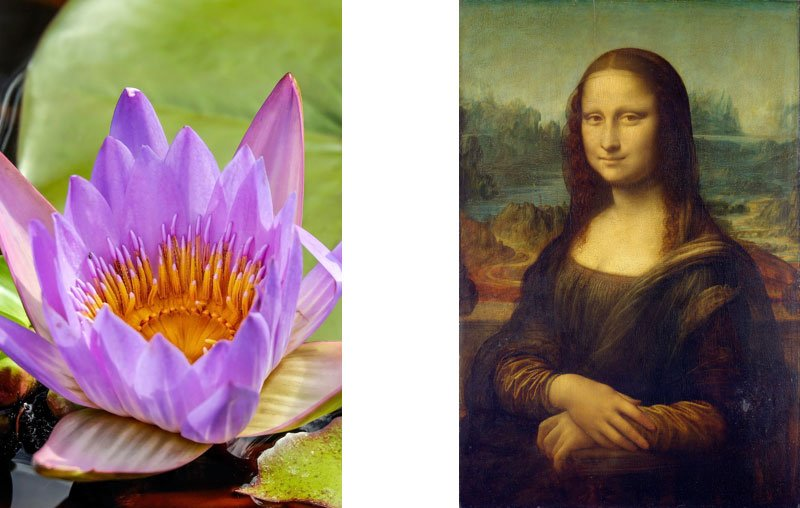

- Image File Type Options
- Optimize Images to pass GTMETRIX
- Reduce External HTTP Requests
- Serve scaled images
JPEG
JPEG will work very well for pictures and other realistic or shaded images like paintings and 3D renderings.
Example:
PNG
PNG is really good for line drawings, logos, icons. Another great use for PNG is when you need to use transparent backgrounds.
Example

SVG
SVGs will play well with line art, logos, icons, illustrations and data visualization. It’s not indicated for realistic images and complex graphics with many details. In some cases, both SVG and PNG will play well for the same purpose.
Example
PNG VS SVG
The images you create in programs like Photoshop and Illustrator look amazing but often the file sizes are very large. This is because the images are made in a format which makes them easier to manipulate in different ways.
Image compression apps are the easiest way to reduce file size of images. These types of tools remove hidden data in the image file like additional color profiles and metadata (like geolocation of where the photograph was taken) that aren’t needed. These tools provide a quick and easy way to reduce files size without losing any image quality.
- TinyJPG | TinyPNG
- Compressor.io
- Kraken
- ImageOptimizer
When you combine most or all of your images into a sprite, you turn multiple images requests into just one. Then you just use the background-image CSS property to display the section of the image you need.
Multiple images:
http://jarlacut.github.io/sprites.htmlSprite image:
http://jarlacut.github.io/sprites-test.htmlServing appropriately-sized images can save many bytes of data and improve the performance of your webpage, especially on low-powered (eg. mobile) devices.
Not scaled:
http://jarlacut.github.io/scaled.htmlScaled:
http://jarlacut.github.io/test.html